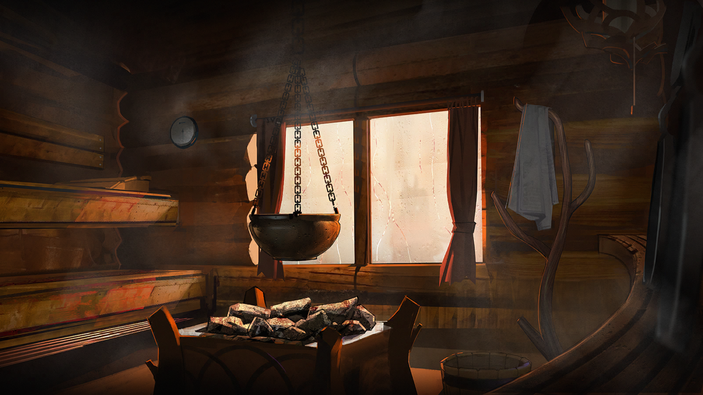

SAMI
响石旅行社 · 萨米专区
CAIRN TRAVEL AGENCY · 萨米 · 哪儿都能去 · 零失联记录 ✓
关于我们
响石旅行社·萨米专区，自泰拉历1095年运营至今。五年来，由专区向导 费尔南·伯恩（代号“响石”）接待的两百余名游客，深入雪原、林线与极光带。
我们的承诺：零失联记录 ✓
详情请访问【关于我们】页面。
精品线路
萨米冰原探险（3天2夜）
直播跟拍可选 · 冬季限定
极光观测之旅
两晚连住 · 极光概率保障
原住民文化体验
石堆与传说 · 向导全程讲解
查看完整行程与费用，请在顶部搜索框输入“萨米冰原探险”。
最新动态
客户评价预览
李
李明华
1100.11
★★★★★
“响石女士太专业了！遇到暴风雪时她冷静地找到避难所，还用‘听石头’的方法确认了撤退方向。全员安全返回！”
响石旅行社，五年 零失联记录 ✓ · 更多评价请查看【客户评价】专区。
联系方式
服务咨询请前往【关于我们】页面，或于萨米边境线沿途驿站寻找石堆标记。
“哪儿都能去，每一位游客都能平安归来。”